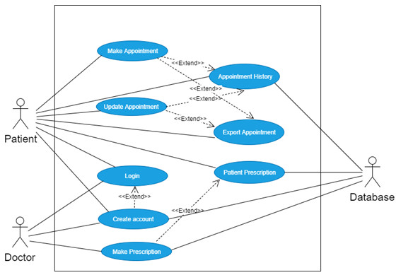

Tang poetry has become the treasure of Chinese traditional literature. So I want to develop a chatbot to introduce famous Tang poetry and poets to foreign friends who want to understand Chinese traditional culture. Tang Dynasty is a golden age for the development of Chinese poetry. There are a huge number of Tang poetry and many outstanding poets were born. I have defined 3 user intents for my chatbot.
Famous Poetry:Introduce the 50 most famous Tang poems.
Famous Poet:Introduce five most famous poets and their representative works.
Season Poetry: Appreciate the beauty of the four seasons in Tang poetry.
This is text-based chatbot, I use a very popular structure which is decomposed into three major Components: Language Understanding, Dialogue Management, Response Generation. Scope the components clearly, so I can focus on each components task.
Language Understanding:Count keywords to identify user intent, required information and optional information. Extract needed information from the user message and put the extracted information to the Hash Table.
Dialogue Management:Based on value extracted from the hash table to decide what should I ask for the missing information or what should I answer.
Response Generation:Based on conversational action returned from dialogue manager to produce the valid responses in this situation.
This is a Java application running on NetBeans IDE. Download the Source Code for the detailed information.
AlphaCare
ATZ Healthcare provides services in the healthcare domain. The company wants to develop a role-based health care application called AlphaCare. Through AlphaCare, patients can see and manage their own medical records. Medical personnel can manage the medical records of their patients including those provided by other medical personnel, be alerted of patients with warning signs of chronic illness or missing immunizations, and perform bio-surveillance such as epidemic detection.
User interface:The user interface should be designed to be both simple and user-friendly. We choose JavaFX FXML, which is an XML-based language that provides the structure for building a user interface separate from the application logic of your code, thereby making the code easier to maintain.It also improves programming efficiency.
Uesr Case:Login, Create Account, Create Appointment, Update Appointment, Appointment History, Export Appointment,Make Prescription, Patient Prescription

Data Persistence:Sqlite Database.
This is a Java application running on NetBeans IDE. Download the Source Code for the detailed information.
Skateboard
Creating web service and web application that allows people to rent and share powered skateboards in State College! We may assume that each user in the system can only have one reservation at a time. The application can perform the following tasks:
1.Add a username to the system.
2.Retrieve the reservation info.
3.Get a list of reservations for all users.
4.Create a reservation for a given user. It should specify username, start date, start time, and number of hours.
5.Update a reservation for a given user. It should specify username, start date, start time, and number of hours.
6.Delete a reservation for a given user.
RESTful web services are built to work best on the Web. We design API by creating a list of RESTful URLs. Implement RESTful API relying on Node.js and Express.js.
1.Store data on the server in a JSON file.
2.The server should return the data in JSON format.
3.The client should extract the data from the JSON response.
4.Create a web-based client to access API using HTML and JavaScript.
5.List of reservations should be displayed in chronological order.
6.App should require “fs” ,“express” and "cors" on the server.
This is a Javascript and HTML application relying on Node.js. Download the Source Code for the detailed information.

 Language Understanding:Count keywords to identify user intent, required information and optional information. Extract needed information from the user message and put the extracted information to the Hash Table.
Dialogue Management:Based on value extracted from the hash table to decide what should I ask for the missing information or what should I answer.
Response Generation:Based on conversational action returned from dialogue manager to produce the valid responses in this situation.
This is a Java application running on NetBeans IDE. Download the Source Code for the detailed information.
Language Understanding:Count keywords to identify user intent, required information and optional information. Extract needed information from the user message and put the extracted information to the Hash Table.
Dialogue Management:Based on value extracted from the hash table to decide what should I ask for the missing information or what should I answer.
Response Generation:Based on conversational action returned from dialogue manager to produce the valid responses in this situation.
This is a Java application running on NetBeans IDE. Download the Source Code for the detailed information.